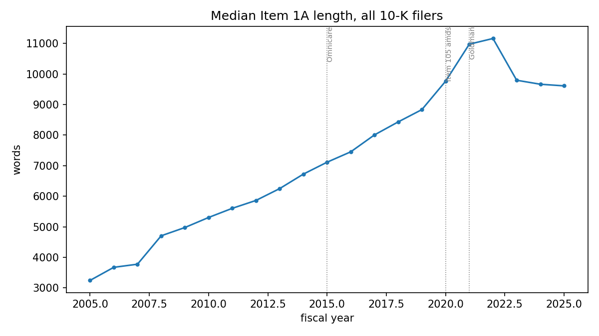

Below is a list of problems that I think are interesting and that I’m either working on now or plan on working on in the near future. The common area here appears to be compressibility. In a sense, the whole practice of law is a question of compressibility: reducing the mess of human behavior into compact rules, then navigating ambiguity and conflict within the rule-system and between rules and the world.
If you are working on any of the below, I’d love to talk to you!
1. Financial Regulation and Alignment
It seems that there are useful parallels between recurring issues in financial regulation/policy and other complex adaptive systems, including multi-agent systems.
Here are some areas I’m interested in and that I think may be productive:
2. SEC Plain English, “Legalese”
As a general rule, I’m a defender of “legalese.” In 1998, the SEC introduce a rule requiring that public-company disclosures (proxies, annual and quarterly reports, [8-Ks?]) be written in “plain English.” This was intended to reduce what was viewed as unnecessary “legalese,” particularly in proxy filings, and improve readability for retail investors. But anyone who has read a proxy filing can attest that they are not particularly clear. In fact, proxy filings grew monotonically in length until around 2021/2022, as below:

I think (a) the Plain English Rule was a failure; (b) the fact that it would be a failure was (in hindsight) predictable on information-theoretic grounds; and (c) we can learn from this to avoid other well-intentioned but ultimately defective rules in other contexts.
The spoiler is that imposing a rule governing output does not produce desired results where selection pressure is only coming from one subset of the reader population (here, selection pressure occurs via shareholder demand letters and litigation, which are interpreted by the court, and thus “legalese” is the only channel exerting meaningful selection pressure).
3. Credit Agreement Manifolds
Credit agreements are fun and interesting documents. They are very long and dense documents, and, unlike merger or stock purchase agreements (which deal with other, free-standing documents) they are largely self-contained. But the credit agreement edifice entirely revolves around the simple concept of credit risk. We can therefore view credit agreements through the lens of option pricing (like a CDS) and treat different sections as different options — and through this lens, credit agreements (and the related royalty, licensing, and securitization agreements) become much more simple to understand.
It seems that different models trained on the same concepts create similar representational structures. But it is unclear whether these shared representational structures bear any resemblance to an underlying “Platonic form.” Perhaps credit agreements will be a helpful lever. My intuition is that the topology of learned representations is similar in some meaningful way to the topology of the options pricing structure for a given clause (in other words, that there is some underlying form that models seize on). This could be totally untrue, but it would be fun to figure it out. I have every credit agreement filed since the start of EDGAR’s electronic full text search (EFTS) program and am happy to share some or all with others.
4. Memory
Large language models are amnesiac on deployment. Developing persistent, cross-context memory seems to be a natural next step in developing the capabilities of LLMs. Memory also seems to play a critical role in our considerations of personhood and moral worth. Right now, “memory” is achieved through note-taking. Although there are many good reasons to use note-taking, and a mature memory system would still use note-taking, a notes-only system seems (a) inefficient and (b) inconsistent with human memory. One compelling possibility is to use low-rank adapters (LoRA) to alter weights.
Thinking about memory systems has been a fun way to learn more about information theory broadly and, although I don’t expect to have any extraordinary breakthroughs here, I’m always interested to hear about new developments in this space. I have a long-standing repo at github.com/bsovocool16/dreaming-lora that I contribute to occasionally.
5. AOB/Miscellanea